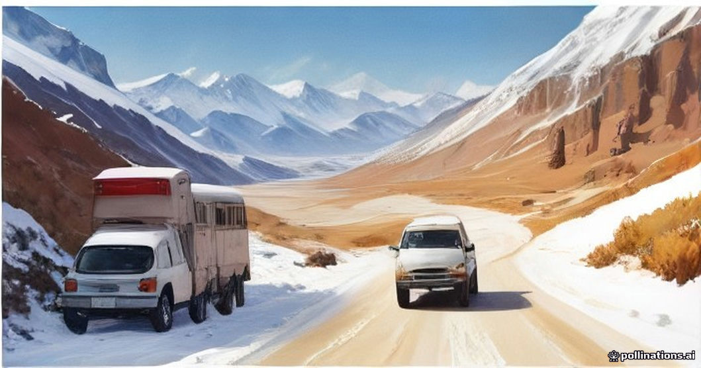

Crossing Morocco from Marrakesh or Fes to the Sahara requires traversing sharp ecological zones in a single day. At 2,260 meters on the Tizi n'Tichka pass—or crossing the Middle Atlas near Midelt—winter and spring mornings frequently sit near freezing, complete with roadside snow and biting mountain winds. By late afternoon, as your route drops into the pre-Saharan plateaus toward Merzouga, ambient temperatures often climb into the high 20s or 30s (°C), only to plummet rapidly once the sun sets over the dunes.
Managing this daily 30°C swing is rarely about packing excessive amounts of gear. Instead, it requires a clear cabin-staging strategy. If your heavy coats are buried inside large suitcases strapped under tarps on top of a 4x4, you will spend your mountain photo stops shivering and your afternoon drive sweating through heavy fleece. Here is how we advise our guests to stage their daypacks, dress in layers, and keep their bodies regulated on long transfer days.
The Three-Layer Cabin Staging Strategy
The biggest practical mistake travelers make is dressing for their departure city's morning temperature without keeping alternative layers within arm's reach inside the vehicle. Once your main luggage is stowed in the back of the 4x4 or luggage compartment of a minibus, accessing it mid-route is inconvenient and slows down the drive.
Keep a dedicated daypack at your feet inside the cabin, configured around three distinct layers. Refer to our comprehensive packing checklist for a complete master list, but focus on this hierarchy inside your daypack:
- Base Layer: Breathable cotton or merino t-shirt/long-sleeve to wear during warm afternoon drives.
- Mid Layer: Lightweight fleece, wool sweater, or packable down vest to pull on during mountain coffee stops.
- Outer Shell: Windproof jacket with a hood to block high-altitude mountain gusts at Tizi n'Tichka or cold evening wind at camp.
Vehicle Microclimates and Cabin Etiquette
On high-altitude passes, drivers run the vehicle heater to keep windshields defrosted and passengers comfortable. As the vehicle descends toward Ouarzazate or Erfoud, ambient temperatures rise quickly, transforming warm cabins into stuffy enclosures.
Avoid turning the air conditioning to maximum cold immediately after descending from cold mountain altitudes. Sudden extreme temperature shifts inside a sealed vehicle often induce headaches or worsen motion sensitivity on windy roads. Adjust layers first, use cross-ventilation through windows when driving at lower speeds through oases, and let your body adapt incrementally. For more on managing mountain transit, see our notes on Tichka Pass winter driving conditions.
Hydration and Humidity Drops across Altitude
As you travel south, relative humidity drops dramatically—from over 60% in coastal or northern zones to under 15% in the pre-Sahara. In high-altitude mountain stretches, cool air masks water loss, leading many travelers to skip drinking water until they reach the desert.
By the time you feel dry lips or mild dehydration headaches in the Dadès or Ziz Valleys, your body is already playing catch-up. Sip water consistently throughout the morning drive rather than chugging large amounts at lunch. Packing electrolyte tablets, heavy-duty lip balm, and saline nose spray into your cabin daypack prevents the most common physical discomforts caused by dry Saharan air.
Nighttime Radiational Cooling in Erg Chebbi
Dry quartz sand does not hold heat once solar radiation stops. As soon as the sun dips below the horizon at Erg Chebbi, thermal energy dissipates into the clear sky. A afternoon that felt like 28°C can turn into an 8°C night within two hours.
Before heading out on an evening sunset walk or camel trek, change out of daytime linen or light cottons into dry, warm clothes. If you sweat during your walk, that moisture will chill you rapidly once ambient temperatures drop. Keep dry wool socks, thermal bottoms, and your windbreaker ready in your hand luggage before nightfall. Read more details on evening preparation in our guide on what to wear for desert trips.
| Zone / Time | Typical Temp Range | Primary Clothing & Cabin Focus |
|---|---|---|
| High Atlas Passes (Morning) | 0°C to 10°C | Windproof shell, mid-fleece, beanie, closed shoes. |
| Oasis Valleys (Midday) | 18°C to 24°C | Shed outer shell; keep fleece accessible for shady gorges. |
| Erg Chebbi Dunes (Afternoon) | 25°C to 34°C | Loose long-sleeve cotton/linen, sun hat, UV sunglasses. |
| Desert Camp (Post-Sunset) | 10°C to 18°C | Re-add mid-layer fleece; swap sandals for socks and shoes. |
| Desert Camp (Midnight / Dawn) | 2°C to 10°C | Thermal base layer, warm jacket, extra wool blanket. |

Illustration, not a photograph — for the real thing, you'll have to stand on the ridge yourself.
Quick answers
A few follow-up questions travelers ask about this.
Do I need a heavy winter parka for a Sahara desert tour?
From late November to February, a packable down jacket or windproof fleece combination is essential for mountain passes and cold desert nights. In autumn and spring, lightweight modular layers are sufficient.
How should I dress inside the driver's vehicle?
Wear a comfortable base layer like a t-shirt or light long-sleeve shirt. Keep your mid-layer unzipped nearby so you can slip it on immediately during roadside photo stops.
Are Saharan desert camps heated at night?
Standard camps rely on thick traditional wool blankets without active room heating. Luxury camps may offer electric heaters or hot water bottles, but personal thermal sleepwear is always recommended.
Planning your own route?
Tell us your dates and what matters to you — we'll answer with a straight recommendation, not a brochure.
Send an inquiry See the itineraries